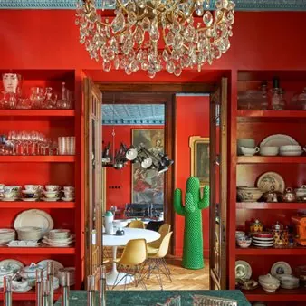

da sab 7 nov a dom 27 dic
Mostra "Francesco Dolfo - Fuoriserie"
Tra gli appuntamenti che inaugurano il calendario di Pordenone Capitale Italiana della Cultura 2027, il Museo Civico d'Arte di Palazzo Ricchieri presenta Fuoriserie, la prima mostra museale personale di Francesco Dolfo, fotografo italiano riconosciuto a livello internazionale…
 Indicazioni
Indicazioni
- Costi e prenotazioni
- Costo non indicato · Prenotazione non indicata
- Programma
- Programma da verificare. Apri la fonte ufficiale per orari e possibili aggiornamenti.
- In caso di maltempo
- Nessuna indicazione specifica pubblicata.
- Note
- Acquisito automaticamente dalla fonte.
L’EVENTO
Descrizione completa
Tra gli appuntamenti che inaugurano il calendario di Pordenone Capitale Italiana della Cultura 2027, il Museo Civico d'Arte di Palazzo Ricchieri presenta Fuoriserie , la prima mostra museale personale di Francesco Dolfo, fotografo italiano riconosciuto a livello internazionale per il suo sguardo poetico e profondamente evocativo. Nel corso della sua carriera, Dolfo ha avuto accesso a luoghi straordinari, raramente aperti al pubblico: residenze private, dimore storiche, atelier, spazi creativi e architetture d'eccezione. Attraverso il suo obiettivo, questi ambienti si trasformano in racconti visivi in cui la luce, i dettagli e le tracce della presenza umana diventano strumenti per suscitare emozioni, memorie e suggestioni. Il titolo Fuoriserie nasce dalla volontà di affermare il valore di ciò che è unico, raccontando gli interni come luoghi capaci di sfuggire a ogni standardizzazione e omologazione. Le fotografie non documentano semplicemente degli interni: ne restituiscono il carattere, la personalità e la capacità di raccontare una storia. Ogni immagine è un incontro tra architettura, design e sensibilità, in cui lo sguardo fotografico rivela ciò che spesso sfugge a un'osservazione distratta. Fuoriserie è quindi un invito a guardare oltre la funzione degli spazi, riconoscendoli come espressione di autenticità, ricerca e sensibilità progettuale. Una collezione di ambienti che, proprio come una creazione fuori catalogo, si collocano al di là delle convenzioni e celebrano il valore dell'unicità.
Fuoriserie è una mostra che mette in relazione due universi solo apparentemente distanti: gli interni contemporanei raccontati dalla fotografia e gli spazi di una dimora storica, oggi trasformata in museo. Un incontro in cui passato e presente non si contrappongono, ma si riconoscono attraverso un linguaggio comune: quello dell'abitare come espressione culturale, estetica e profondamente umana.
La mostra è ospitata nelle sale di Palazzo Ricchieri, uno degli edifici più antichi e significativi di Pordenone. Antica casa-torre medievale trasformata nei secoli in dimora nobiliare, dal 1970 ospita il Museo Civico d'Arte della città.
Il progetto espositivo è curato da Marco Minuz, professionista attivo nello sviluppo di iniziative culturali in ambito pubblico e privato e fondatore di Suazes, realtà specializzata nella progettazione e produzione di mostre ed eventi culturali.
Orari di apertura: venerdì 15:00-19:00 / sabato e domenica 10:00 - 13:00 e 15:00 - 19:00
Per variazioni sulle aperture: https://pordenonemusei.it/musei-in-rete/museo-civico-darte-di-palazzo-ricchieri/ Informazioni: 0434 392935 / museoarte@comune.pordenone.it
IL PROGRAMMA
Programma e orari
Appuntamenti raccolti dalle fonti elencate. Dove manca un orario, non è ancora disponibile in questa scheda.
Programma pubblicato
- Dal 2026-11-07 al 2026-12-27
INFORMAZIONI UTILI
Prima di partire
- Controllare la fonte prima di partire.
ORGANIZZAZIONE